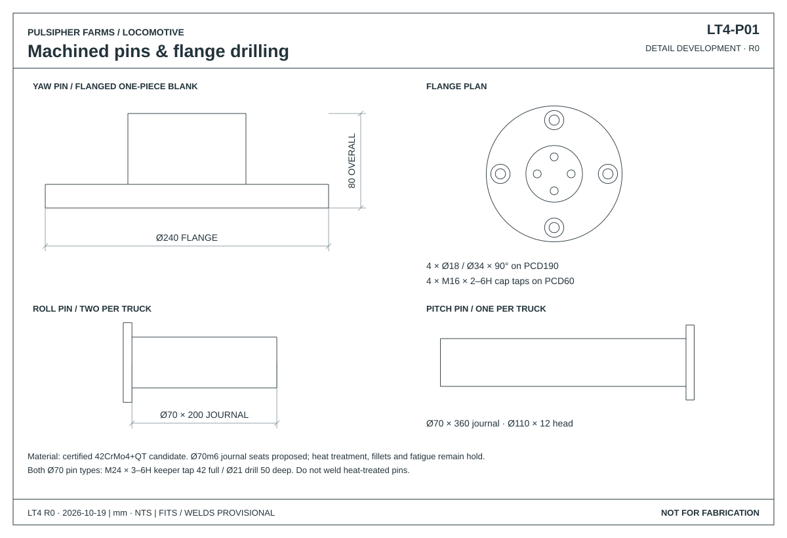
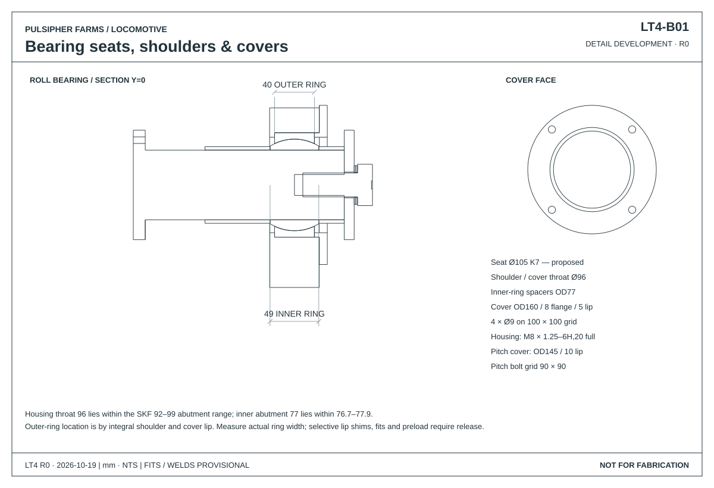
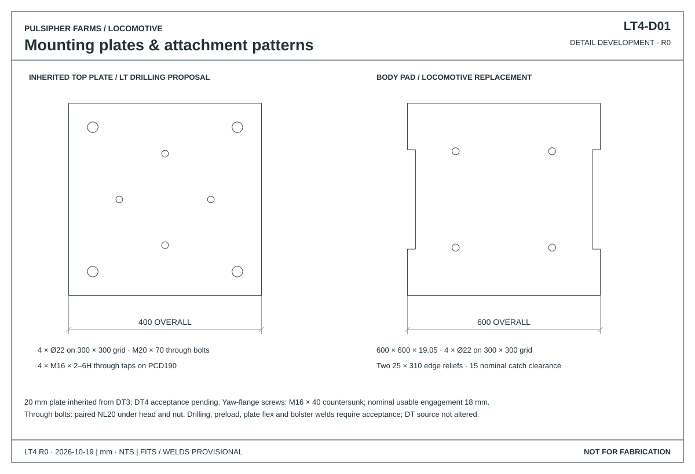
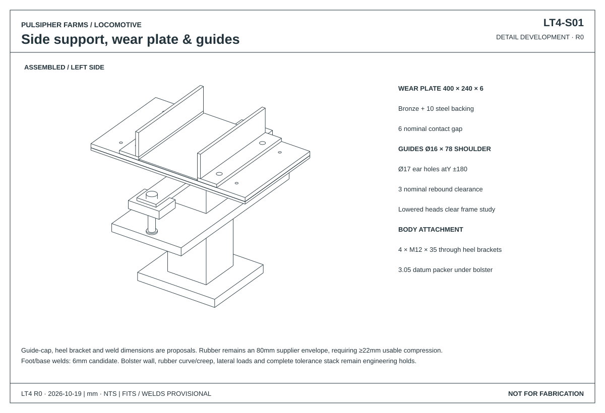
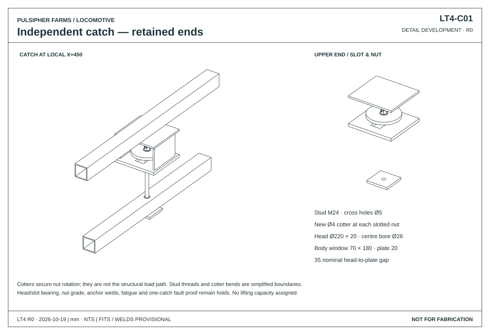
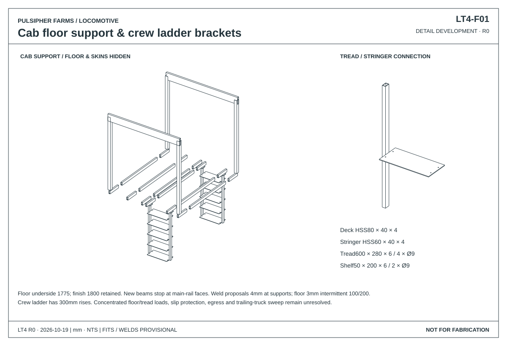
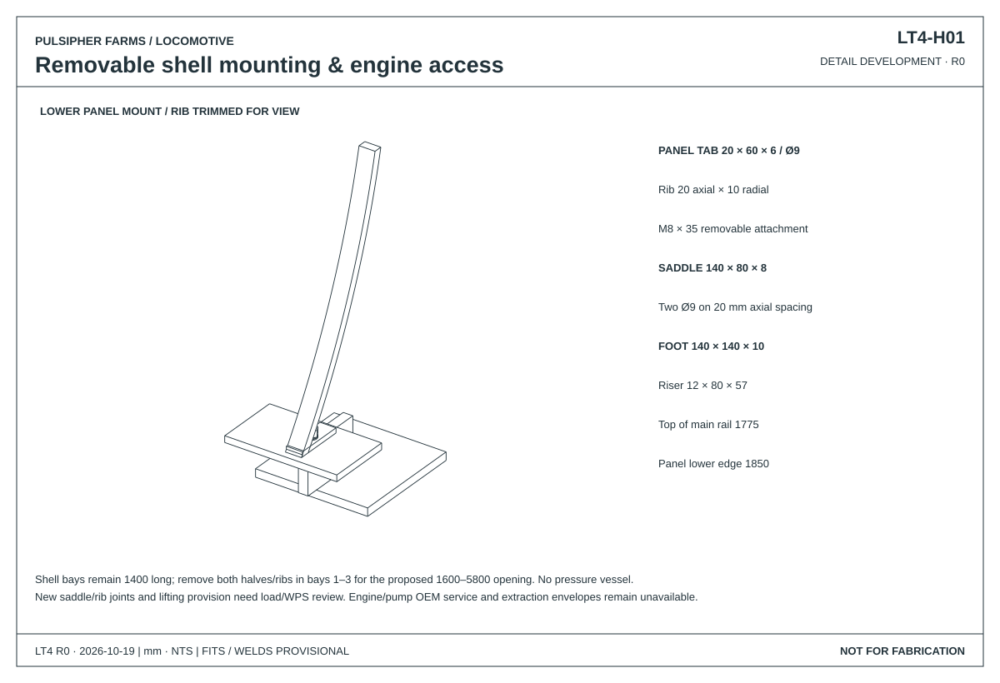

LOCOMOTIVE / LT4
Truck connections
Pivot retention · Bearing seats · Side supports · Frame attachments
DETAIL DEVELOPMENTR0 · Not for fabrication19 October 2026
Detail drawings
CAD projections · Nominal dimensions in mm







Frame top 1,775 mm provisional · DT4 motor mounts and suspension pending. Checks, parts & unresolved details →
3D assemblies
Loading…Loading CAD geometry…